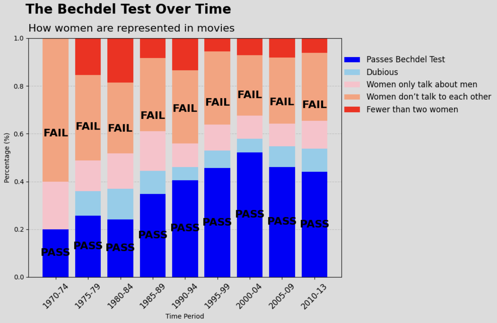
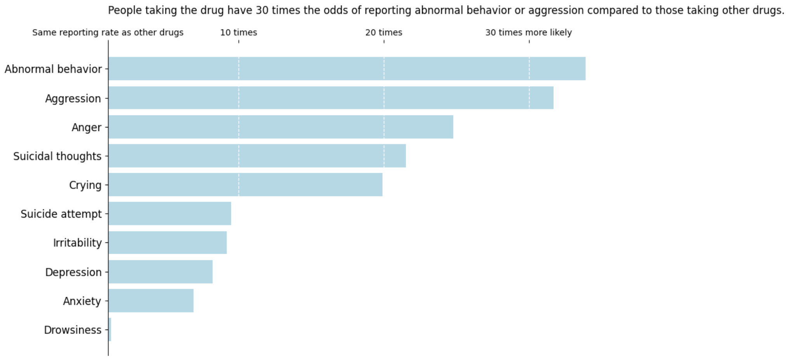

Hi, I am Alina Faisal, a first-year Master of Health Informatics (MHI) student at the University of Michigan,
specializing in data science. My academic and professional focus lies in data analysis, visualization, statistical and predictive modeling
and leveraging machine learning techniques to draw impactful insights. My goal is to apply data-driven solutions
to real-world challenges, particularly in healthcare and various domains.
SI 649: Visualizations
The following visualizations were created as part of the course SI 649 using Python (Matplotlib, Altair, Seaborn), Tableau.
Visualization 1 (Matplotlib and Tableau)

Figure 1: This stacked bar chart shows how movies over different time periods performed on the Bechdel Test.
Visualization 2 (Matplotlib)

Figure 2: This horizontal bar chart illustrates the relative odds of reporting various behavioral and psychological conditions, such as abnormal behavior, aggression, anger, and anxiety, for a specific drug compared to others. The x-axis represents the relative odds ratio (ROR), with dashed reference lines marking 10, 20, and 30 times the likelihood. The baseline indicates the same reporting rate as other drugs.